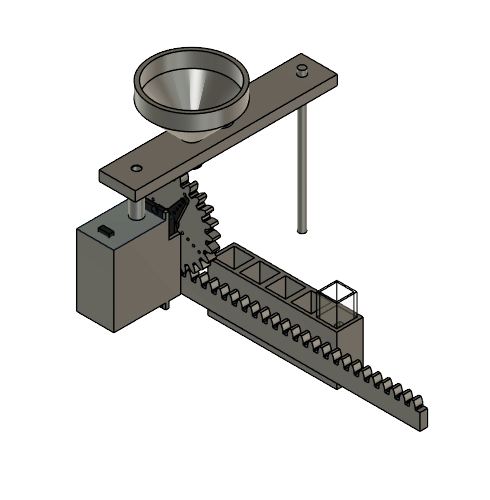
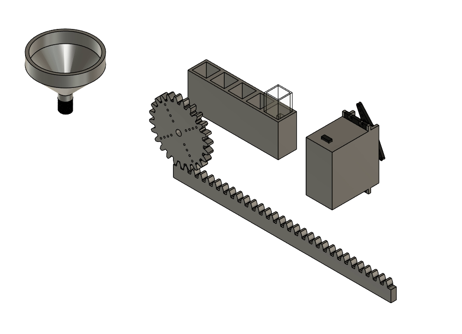
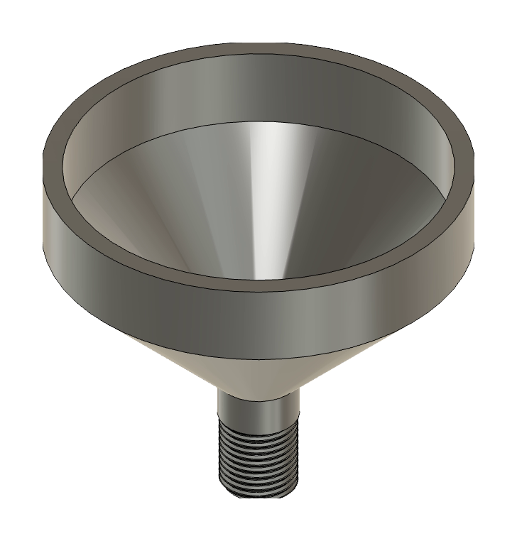
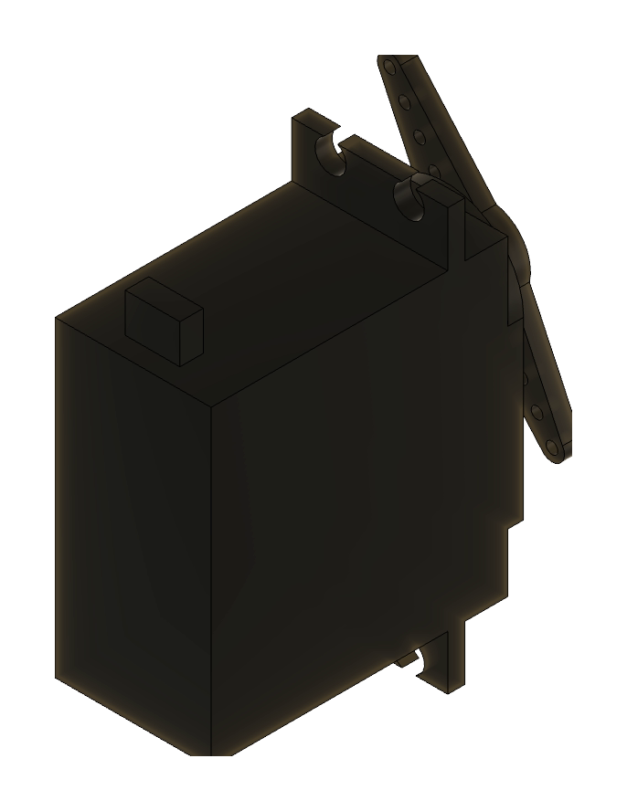
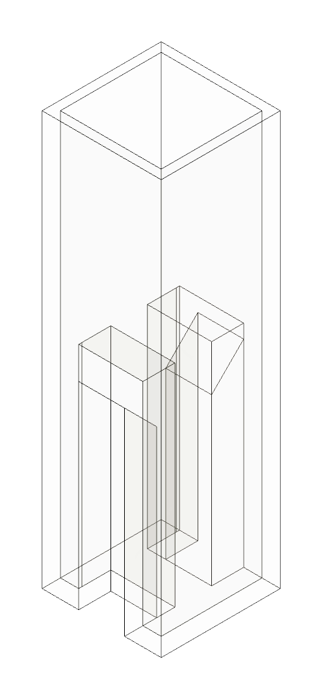

Design & Fabrication
Rack-and-Pinion Cuvette Holder

Project overview
A Servo-Driven Stage For Sample Cuvettes.
For my onboarding project on the Mars Rover life detection team, I designed and 3D printed a holder that moves sample cuvettes into position under a funnel.
A servo turns a pinion gear that drives a straight rack. The rack carries a four-slot cuvette holder, so one servo can slide each cuvette in turn beneath the funnel mounted on the support arm above. I modeled each part in Fusion 360, brought them together in a single assembly, and used Fusion joints to simulate the motion and confirm that every cuvette lines up under the funnel. I then 3D printed the parts.
Key Work & Outcomes
- Modeled a full Fusion 360 assembly: funnel, support arm, servo, pinion gear, rack, and cuvette holder.
- Used a rack and pinion to turn the servo’s rotation into straight-line travel for four cuvette slots.
- Simulated the mechanism with Fusion joints to confirm that each of the four cuvettes moves under the funnel.
- Sized the holder around a standard cuvette, modeled as its own part, then 3D printed the design.
Design
The Parts Of The Assembly
Each component was modeled on its own, then mated into the final assembly.




Continue exploring